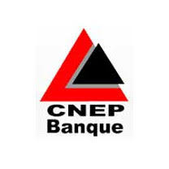

⇐ Retour vers la page d'accueil
Experience
2018/2021 Ingénieur Réseaux et Sécurité  CNEP Banque Algerie
La Caisse nationale d'épargne et de Prévoyance , CNEP, est est une banque algérienne, spécialisée dans la collecte de l'épargne des ménages, le financement de l'habitat à travers ses crédits immobiliers aux particuliers et aux promoteurs privés et publics, et aussi le financement des entreprises intervenant en amont du secteur du bâtiment..
Taches
- Participation à l’élaboration de l’architecture (WAN/LAN).
- Participation à la réalisation d’un LLD qui décrit la configuration détaillé.
- Configuration routage de la banque (Cisco).
- Préparation des politique de sécurité, plan adressage et matrice du Traffic.
- Rédaction et validation des document d’architectures Firewaling.
- Administration Firewall FORTINET
- Gestion des Vulnérabilités techniques des différentes plateformes du SI de la Banque.
- Elaboration de campagne de sensibilisation à la sécurité SI aux collaborateurs de la Banque.